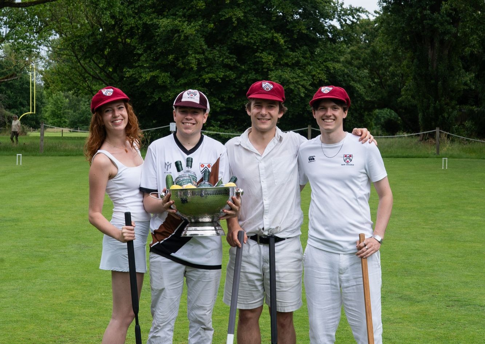
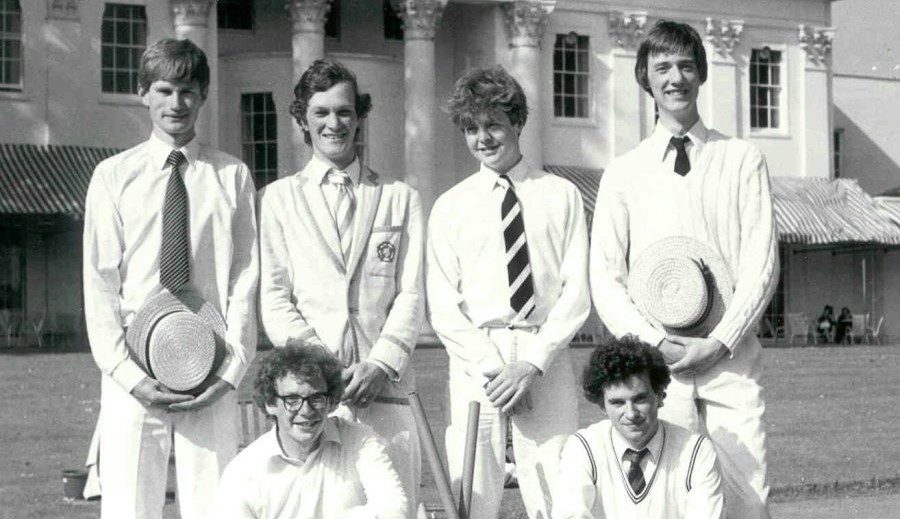
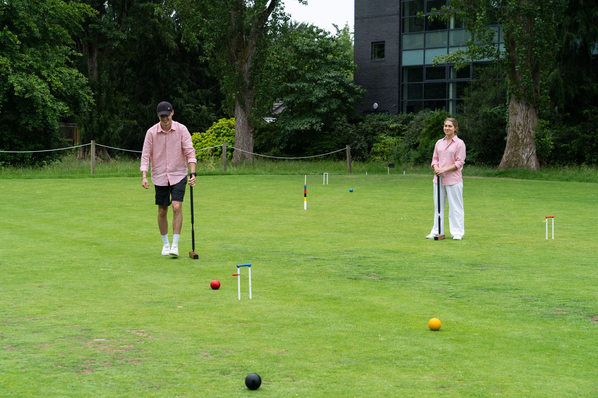

College competition
Croquet Cuppers
OUACC runs Oxford’s inter-college croquet competition, bringing teams together from across the University.
Play on the University Parks courts, learn from experienced players, compete for Oxford and take part in one of the University’s oldest sporting traditions.
OUACC brings together complete beginners, regular players and experienced competitors. Members have access to full-size courts, Club equipment, coaching and a programme of matches and competitions.

OUACC runs Oxford’s inter-college croquet competition, bringing teams together from across the University.

Each year the Club fields an Oxford team for the Varsity Match against Cambridge at the Hurlingham Club.
Start with introductory coaching, join Club evenings, enter competitions and progress at your own pace.
The Club’s courts are in the University Parks. Members can book courts, use Club equipment and play throughout the season, subject to fixtures and coaching.
Find us
Membership options, practical information and joining instructions are available here.